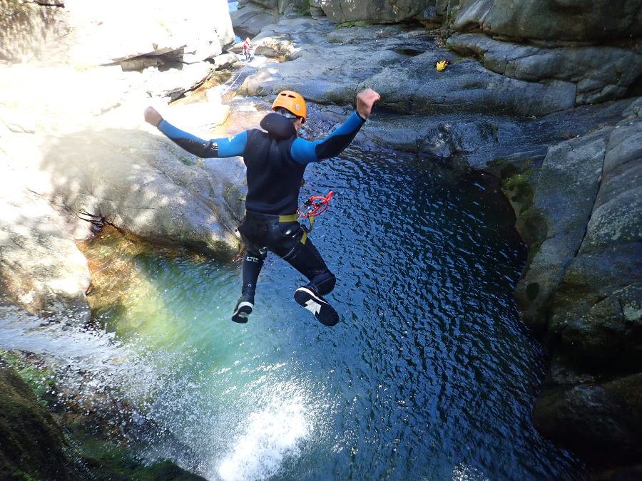
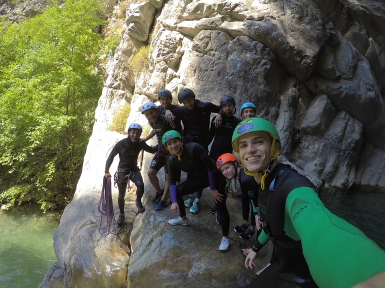
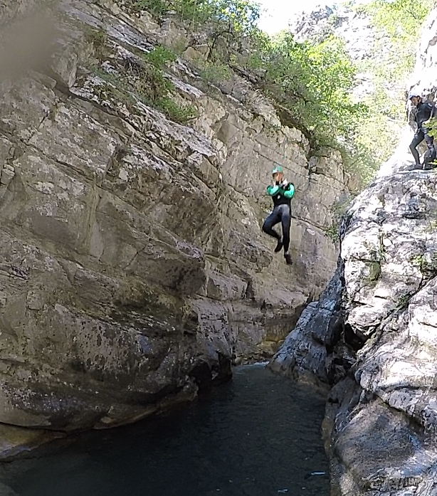

Qu'est que le Canyoning?Peu d’activités sportives sont aussi variées! Le canyoning consiste à évoluer dans le lit d’un cours d’eau, passant dans des gorges ou des ravins étroits. Situés en montagne, ces canyons escarpés comportent des cascades de différentes hauteurs que l’on franchit de multiples manières : saut, toboggan, ou descente en rappel.
La plupart du temps, la progression entre les cascades, s'effectue à pied sur un terrain varié, mais également à la nage dans des vasques plus ou moins profondes. Petite précision importante. |
 |
|  |
Canyoning à CramassouriLe Vallon de Cramassouri est à la fois sauvage, encaissé et ludique, cette descente de canyon est une belle découverte. C’est un canyon très aquatique (on est souvent dans l’eau) qui ne comporte pas d’obstacle très haut, la hauteur maximale des sauts est d’environ 6 mètres et on a la possibilité de faire un grand toboggan de 10 mètres à la fin si on veut. |
Un super sautlol
|
 |